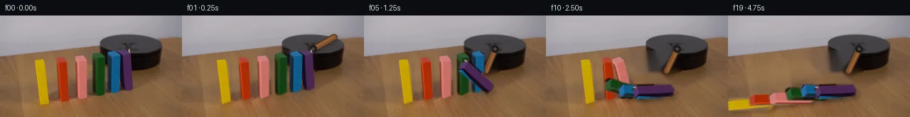

![首帧]()

Round 00
2026-11-04T21:43:01.246555+00:00像素候选变化代码 +206/−0inspection 更新
pixels 01edbda3fbe11e33 · code 84236ba88d198a20
查看本轮 generate.py 真实 diff
--- previous/generate.py
+++ current/generate.py
@@ -0,0 +1,206 @@
+#!/usr/bin/env python3
+"""Generate a locked-camera domino continuation from the supplied first frame."""
+
+from pathlib import Path
+import math
+
+import cv2
+import numpy as np
+from PIL import Image, ImageDraw, ImageFont
+
+import artifact_io
+
+
+ROOT = Path(__file__).resolve().parent
+W, H = 256, 144
+
+
+# Hand-measured visible silhouettes and bottom pivots, ordered left-to-right.
+BLOCKS = [
+ {"name": "yellow", "poly": [(48, 62), (61, 60), (66, 63), (70, 121), (55, 126), (51, 122)], "pivot": (61, 123), "onset": 13},
+ {"name": "red", "poly": [(78, 60), (91, 58), (95, 62), (98, 116), (84, 121), (81, 117)], "pivot": (89, 118), "onset": 11},
+ {"name": "pink", "poly": [(104, 58), (118, 55), (123, 59), (126, 112), (112, 118), (108, 114)], "pivot": (117, 115), "onset": 9},
+ {"name": "green", "poly": [(130, 55), (144, 51), (148, 55), (148, 108), (135, 114), (131, 111)], "pivot": (140, 111), "onset": 7},
+ {"name": "blue", "poly": [(149, 54), (163, 49), (169, 53), (169, 104), (155, 111), (151, 107)], "pivot": (160, 108), "onset": 5},
+ {"name": "purple", "poly": [(165, 53), (179, 47), (185, 51), (188, 101), (176, 108), (170, 104)], "pivot": (179, 105), "onset": 3},
+]
+
+
+def smoothstep(x: float) -> float:
+ x = float(np.clip(x, 0.0, 1.0))
+ return x * x * (3.0 - 2.0 * x)
+
+
+def block_angle(frame_no: int, onset: int) -> float:
+ """Fast gravity-driven tip, then a very small damped settling motion."""
+ if frame_no < onset:
+ return 0.0
+ p = (frame_no - onset) / 4.0
+ if p <= 1.0:
+ # Accelerate at first and soften the tabletop contact.
+ return 88.0 * smoothstep(p)
+ settle_age = frame_no - (onset + 4)
+ wobble = 1.8 * math.exp(-0.75 * settle_age) * math.cos(settle_age * 2.4)
+ return 88.5 + wobble
+
+
+def soft_polygon_mask(points, feather=0.8):
+ scale = 4
+ mask = np.zeros((H * scale, W * scale), np.uint8)
+ pts = np.asarray([(int(x * scale), int(y * scale)) for x, y in points], np.int32)
+ cv2.fillPoly(mask, [pts], 255, lineType=cv2.LINE_AA)
+ mask = cv2.resize(mask, (W, H), interpolation=cv2.INTER_AREA)
+ if feather:
+ mask = cv2.GaussianBlur(mask, (0, 0), feather)
+ mask = np.clip((mask.astype(np.float32) - 4.0) * 1.05, 0, 255).astype(np.uint8)
+ return mask
+
+
+def alpha_over(dst, src_rgb, alpha):
+ a = alpha.astype(np.float32)[..., None] / 255.0
+ return np.clip(src_rgb.astype(np.float32) * a + dst.astype(np.float32) * (1.0 - a), 0, 255).astype(np.uint8)
+
+
+def draw_arm(frame, frame_no):
+ if frame_no == 0:
+ return frame
+ # Screen-space angle grows clockwise because image y increases downward.
+ sweep = {1: -30.0, 2: 35.0, 3: 100.0, 4: 118.0, 5: 112.0}
+ theta = sweep.get(frame_no, 115.0 + 1.3 * math.exp(-(frame_no - 5) * 0.5) * math.cos(frame_no))
+ pivot = np.array([184.0, 47.0])
+ radians = math.radians(theta)
+ tip = pivot + 35.0 * np.array([math.cos(radians), math.sin(radians)])
+
+ overlay = frame.copy()
+ # A soft projected arm shadow anchors it to the platform/tabletop.
+ shadow = np.zeros((H, W), np.uint8)
+ cv2.line(shadow, tuple(np.rint(pivot + (2, 3)).astype(int)), tuple(np.rint(tip + (2, 3)).astype(int)), 150, 7, cv2.LINE_AA)
+ shadow = cv2.GaussianBlur(shadow, (0, 0), 2.0)
+ dark = np.zeros_like(overlay)
+ dark[:] = (14, 12, 10)
+ overlay = alpha_over(overlay, dark, (shadow.astype(np.float32) * 0.42).astype(np.uint8))
+
+ # Dark edge, warm wood core, and a narrow highlight preserve cylindrical volume.
+ p0 = tuple(np.rint(pivot).astype(int))
+ p1 = tuple(np.rint(tip).astype(int))
+ cv2.line(overlay, p0, p1, (66, 40, 24), 7, cv2.LINE_AA)
+ cv2.line(overlay, p0, p1, (128, 79, 42), 5, cv2.LINE_AA)
… diff truncated; 119 more lines …